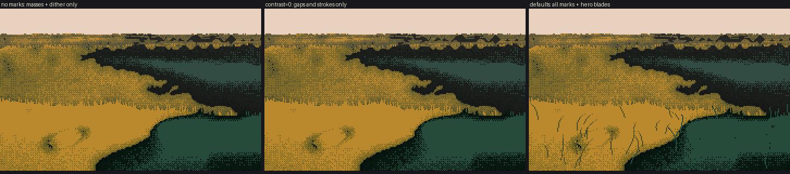
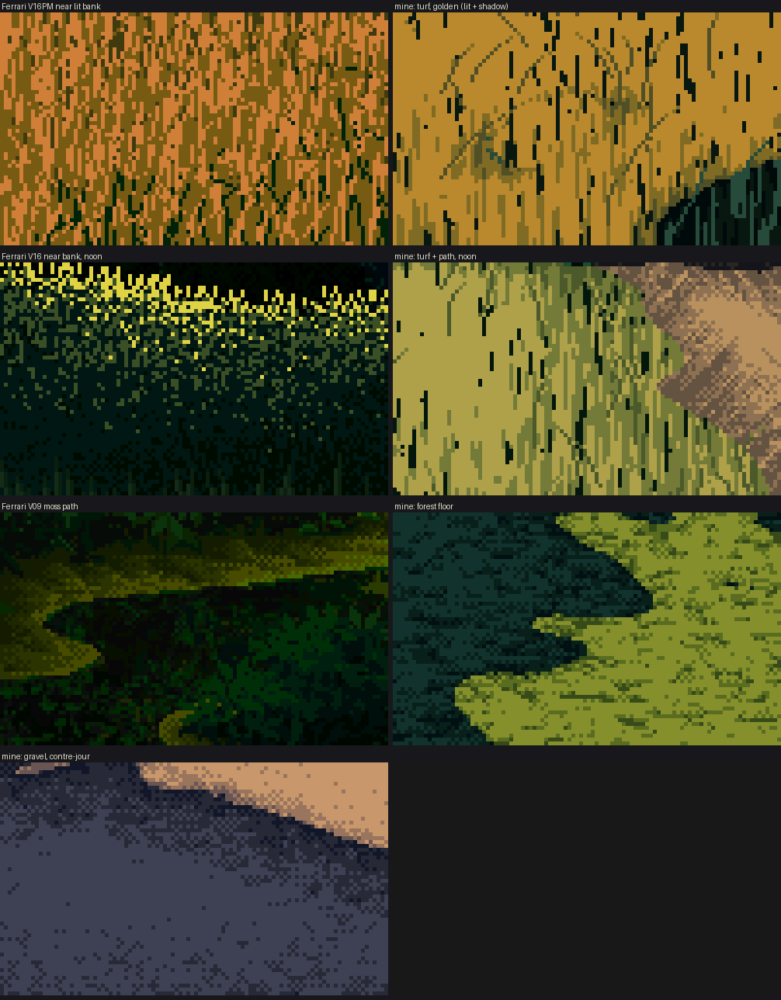
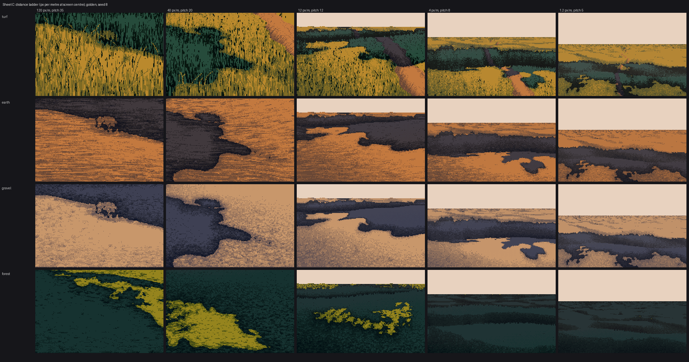

Lesson 4: Texture inside the mass
Back to the course. Previous: Turn the masses.
By now each mass has a continuous value v inside its family. Texture is offsets in step space added to v, then quantized. Three rules hold for every material:
- Mark size follows pixels per metre. The same grass is a 7-px strand near and a checker far.
- Contrast follows the family and the distance. Marks are bold in light, quiet in shadow, and fade with log distance.
- Marks never cross the terminator, except as a fringe of tips.
First, the proof that the masses do the work and the marks only add to them:

t_marks_off. Left: marks() switched off entirely, leaving masses and dither only. Middle: contrast=0. Right: defaults. Note that contrast=0 doesn't remove the marks, because it scales only the offsets, while the step-skipping gaps and strokes (section 3) are set directly. To see your masses alone, switch the marks function off (figs._nomarks_cell).
The left picture already reads as a meadow bank at 1×. If yours doesn't with the marks off, go back to lessons 2 and 3.
1. The quantizer: DPaint's gradient fill
Printing V16's islet as one character per index showed his mass turns: a 2×2 ordered dither between adjacent steps, a clean checker at 50%, and a little randomness in the threshold (DPaint's "dither" slider).
B2 = np.array([[0.125, 0.625], [0.875, 0.375]])
def ordered(v, jitter=0.25, rng=None, bayer=B2, n=None):
t = tile(bayer, *v.shape) + jitter * (rng.random(v.shape) - 0.5)
base = np.floor(v)
return (base + ((v - base) > t)).astype(int)

030. V16's islet (left), his own value field through my quantizer (middle), and my own field (right).

031. Jitter 0.5, 0.8 and 1.1 below his. The painter uses 0.5.
I believed the middle copy was indistinguishable. The critic showed it isn't, and the notes are worth having:
- My transition seam is vertical. His runs diagonally along the form.
- My checker is even. His clumps into two- and three-pixel clusters that straggle deep into the dark.
A per-pixel threshold jitter can't clump. To match him you'd jitter the cluster, not the pixel. I didn't get that far.
The painter uses this quantizer everywhere except in near strands (section 2), and it's also what turns the masses from lesson 3.
2. Grass: strands whose size comes from distance
Blade height is a world size (0.2 m turf, 0.45 m meadow). Its pixel height bh = 0.2 * ppm sets everything:
rl = np.clip(bh * 0.6, 1, 7.5) # run length; V16PM measured 1.6 far, 3.8 mid, 5 near
o, t = runs_field(H, W, rl, rng, vertical=True) # one random offset per vertical run
tuft = smooth_noise(H, W, 5.0, 0.8, rng) # tall, narrow: gathers darks into pockets
u = ndtr(0.45 * tuft + 0.89 * o) # the run's quantile, tuft-correlated
coh = np.clip((bh - 3.0) / 2.5, 0, 1) # 0 below 3 px blades -> checker, 1 above -> strands
off = a * (u - 0.5) * 1.7
runs_field walks each column bottom-up, laying runs of random length around rl, each with one value. So a blade is one colour top to bottom.
coh is the handoff. With big blades, the threshold is a run-coherent 0.5, and each run rounds whole into one of two classes: strands. With small blades, the threshold is the ordered dither: the checker V16 uses for mid-distance mounds. I moved that handoff up to 3 px after comparing my mid ground with V16's. The critic later wrote the same thing independently: "at mid distance he stops drawing strands".
A bug worth knowing: my first version used the run's quantile u both as the offset and as the threshold. A high-u run pushed its value up and raised its own bar, the two cancelled, and the strands vanished. If your marks disappear, check that the offset and the threshold aren't drawn from the same random number.

041. Near field, strands cancelled by their own threshold.
3. Marks skip steps
The mass's own dither mixes neighbouring steps. The marks inside it don't: they jump. That's where Ferrari's contrast lives.
# in light: the gap between blades is a near-black green, two or three steps under the base
gap = (ug < 0.22 * near) & (tuft < -0.35) & lit # gaps sit in the tufts' dark pockets
# in shadow: blades are 'negative painted' olive strokes on the dark
strk = (u > 1 - 0.42 * near) & ~lit
...
step[gap] = 1
step[strk] = 2
Tie the gaps to the tuft noise (tuft < -0.35), so they gather into pockets. Scattered evenly, they read as pepper.
4. Earth, gravel, forest floor
Earth and paths: streaks along the form. Build a "form field" phi whose iso-lines run along the thing (depth for open ground, distance from the centre line for a path). Then smear sparse, strong noise along those iso-lines with a line-integral convolution:
phi = np.where(path_dist < 2.0, path_dist * 40, depth)
base = np.where(rng.random((H, W)) < 0.25, noise * 2.2, noise * 0.5) # few strong grains
o = lic(base, phi, length=np.clip(0.25 * ppm, 1, 9))
The path is also its own small mass: a packed, lighter crown, and margins a step down where the grass shades it.
Gravel: small stones with a light top row, a dark lower row and a dark pocket beneath. Keep them quiet: 1–2 steps in light and less in shadow. Every earlier gravel in the studio was criticised for being louder than the objects on it.
Forest floor: overlapping flat leaf lozenges (V30's ground cover), bold in light and near-gone in shade.

t_texture_close. Ferrari's V16PM, V16 and V09 beside my turf, turf and path, forest floor and gravel, all at 5×.
Honest reading of this figure:
- My path and gravel are fine.
- My forest floor is wrong in shape and key. His light is a dim ribbon, and mine is a bright field. I don't teach it.
- My near lit turf is too flat: see section 6.
5. Distance and the crest fringe
Mark contrast fades with log distance, down to a floor, so far ground stays stippled rather than going flat:
fade = np.clip(1.2 - np.log(depth / band_z[0]) / 2.2, 0.45, 1)
vv = v + off * fade
vv = np.where(lit, np.clip(vv, 2.6, 5.99), np.clip(vv, 0, 2.99)) # marks stay in their family
My first floor was 0.15, and the far shadows went to flat colour. The palette's depth bands meet in a dithered seam (a 4×4 Bayer offset on log depth), never a ruled line.

Sheet C: 120 down to 1.2 px per metre, for turf, earth, gravel and forest. I didn't run the grass-lod student's frame-by-frame pop test. The handoffs are continuous in pixels per metre, which suggests no pops, but that's inference, not a check.
At every crest, blade tips break the top edge (the near mass's grass pokes up over the land behind) and a few dark holes open along the line. The master-copy student measured about 40% dark holes along V16PM's far crest. This is crest_fringe, which uses 30%. It's what keeps a mass outline from being a cut-out.
6. The near lit field, a measured flaw
Counting steps in the same box of his near bank and mine:
| top or base step | stroke, one down | olive | near-black gap | |
|---|---|---|---|---|
| Ferrari V16PM | 40% | 48% | 6% | 6% |
| mine, as shipped | 72% | 15% | 5% | 7% |
mine, mass_turn=0, crest_band=0 |
45% | 43% | 5% | 7% |
| mine, turn faded out near (patch below) | 51% | 35% | 6% | 7% |
His lit grass is mostly strokes. As shipped, mine is mostly flat ochre. Switching terms off one at a time found the cause: the lesson-3 turn, whose hot interior pushes the near lit field up to the top step. (I guessed the lit keying first, and I was wrong: it doesn't move the numbers.) Near grass should turn by stroke density, not by a value ramp, so fade the turn out by blade size:
def tm(v, lit, buf, cb=1.0, mt=1.0, cap=None):
lit_c = clean_mask(lit)
on = orig(v, lit_c, buf, cb, mt, cap)
off = np.where(lit_c, np.clip(v, 3.0, 5.99), np.clip(v, 0, 2.9))
w = np.clip(1 - (0.2 * buf['ppm'] - 2.0) / 4.0, 0, 1) # full turn below 2-px blades, none above 6
return w * on + (1 - w) * off

t_near_fade_8x. His near bank, mine as shipped, and mine with the fade (a patch in figs.py; the study code is unchanged).
It's closer, not there. At 8× my strands are still wider and blotchier than his 1-px ones. The tuft noise is 0.8 px wide, so neighbouring runs share a value, where his alternate. That's the next knob I'd turn. The squint test from lesson 1 is how you'd know it worked: his near grass vanishes into bands at a squint, and mine should too.
What not to copy
- Hero blades on lit ground. Long drawn single blades read as scratches. They belong only in the front metre, and only in shadow.

- Puddles as I built them read as flat grey stickers. The channel student's water rules are the place to start instead.